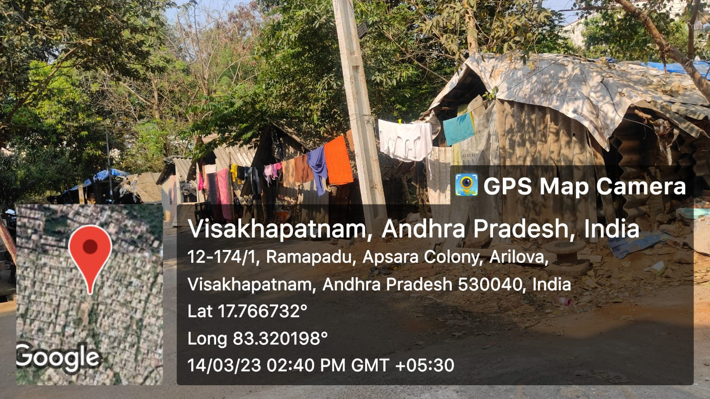

Arilova

Arilova is a slum area located in the city of Visakhapatnam, Andhra Pradesh, India, which falls under the jurisdiction of GVMC (Greater Visakhapatnam Municipal Corporation). Like many other slum areas in India, Arilova faces a range of challenges that affect the well-being of its residents.
Major Problems
- Poor living conditions: Many households in Arilova live in overcrowded, makeshift houses with inadequate sanitation facilities. This can lead to health issues, including the spread of infectious diseases.
- Limited educational opportunities: Many children in Arilova do not attend school due to the lack of resources and access to quality education, which can perpetuate the cycle of poverty
- Lack of government support: Despite being under the jurisdiction of GVMC, residents in Arilova often feel neglected by the government and do not receive adequate support for their needs.